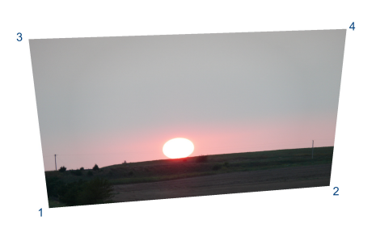

With Stretch Paste you can copy an image from the clipboard into the current photo, specifying
the locations for the corner points.
To stretch a photo, first copy an
image into the clipboard. Then select Stretch Paste from the Edit menu of Photo Mud Editor. Next, click on 1 to 4 points where the corners of the pasted
image are to be located. The first point is the lower left, the second is the lower right, the third is
the upper left, and the fourth point is the upper right corner. The pasted image will be stretched to
fit between the points you set.

A rubber band box shows where the image will be located. If you don't want to use all four points
to define the location, press Enter when you are ready to complete the operation.